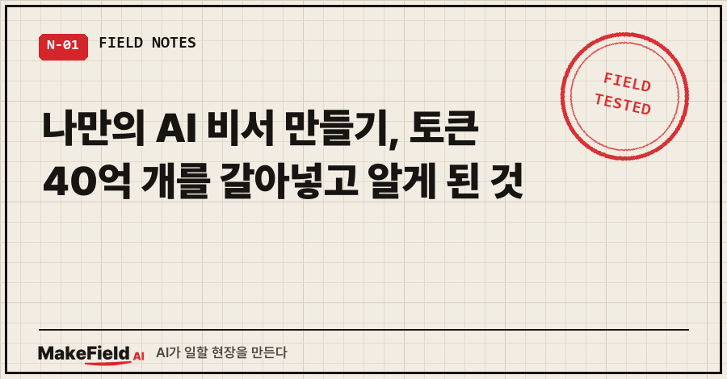
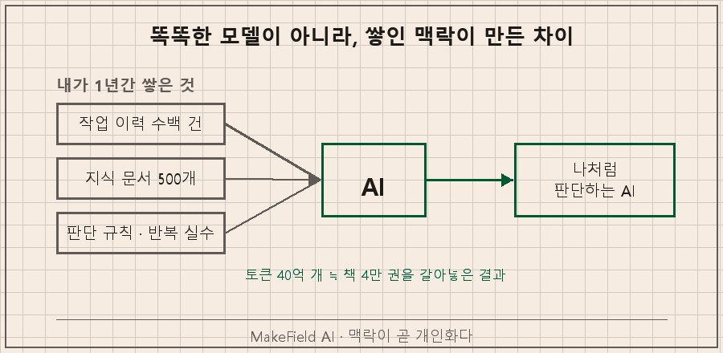
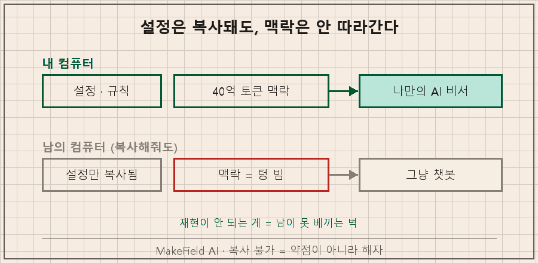
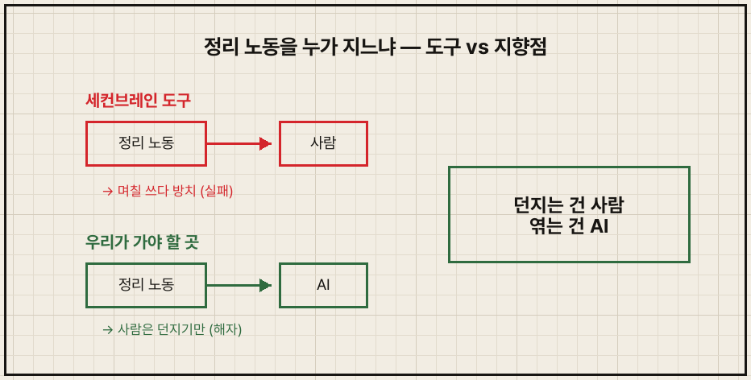

결론부터 말씀드릴게요.
나만의 AI 비서가 남들 것보다 나를 잘 아는 이유는, 똑똑한 모델이 아니라 쌓인 맥락이었어요.
저는 지난 1년간 AI랑 토큰을 40억 개쯤 주고받았는데, 그 40억 개가 그대로 나만의 AI 비서를 만든 재료였거든요.
근데 재밌는 건요, 그렇게 만든 걸 남한테 통째로 복사해주면 그 컴퓨터에선 그냥 평범한 챗봇이 돼요.
왜 그런지 파보다가, 제가 약점이라고 생각한 게 사실은 정반대라는 걸 알았습니다.
저는 15년차 제어 엔지니어예요.
수소 설비 제어판넬 설계하고, PLC 코드 짜고, 현장 가서 결선 확인하는 게 일이죠.
AI를 뉴스로 아는 게 아니라 매일 실무에 굴리다 깨지고 고치는 사람이고요.
1. 토큰 40억 개, 책으로 4만 권이래요
어느 날 이 숫자를 직접 확인했어요.
토큰 40억 개. 책으로 치면 4만 권쯤 된다고 하더라고요.
처음엔 실감이 안 났고, 그다음엔 솔직히 좀 소름 돋았어요.
내가 AI랑 이만큼을 주고받았다고 싶었거든요.
돌아보니 저는 제 모든 맥락을 AI한테 갈아넣고 있었어요.
[내가 AI한테 쌓아온 것]
작업 이력 : 수백 건 (뭘 언제 왜 그렇게 결정했는지)
지식 문서 : 500개 넘음 (차단기 선정 근거, 규격, 법규 원문)
누적 분량 : 약 23만 줄
합계 : 토큰 40억 개 ≒ 책 4만 권 분량제가 누군지, 어떻게 일하는지, 무슨 실수를 반복하는지, 뭘 기준으로 판단하는지까지 전부 기록과 규칙으로 쌓았어요.
그래서 AI가 저처럼 일해요.
정확히는, 제 말투나 판단 방식을 잘 알아들어요. '아' 하면 '어' 하는 거죠.

2. 자비스를 만들고 싶었는데, 상용화가 안 되더라고요
이쯤 되니 욕심이 났어요.
이걸 제품으로 만들고 싶었거든요.
다들 AI 하면 떠올리는 거 있잖아요, 아이언맨의 자비스 같은 개인 비서요.
근데 파고들수록 결론은 하나였어요.
이건 상용화가 안 되겠더라고요.
왜냐면 이 효율은 제가 토큰 40억 개를 직접 갈아넣어서 나온 거거든요.
남들은 그 노동을 안 해요. 못 하고요.
제 설정을 통째로 복사해서 옆자리 컴퓨터에 깔아줘도, 그 책상에선 그냥 빈 챗봇이에요.
[내 설정을 남한테 복사해주면?]
넘어가는 것 : 프로그램·설정·규칙 파일
안 넘어가는 것: 40억 토큰어치 쌓인 '내 맥락'
결과 : 남의 컴퓨터에선 → 평범한 챗봇 (재현 안 됨)좋은 걸 만들었는데 나눠줄 수가 없다는 게, 한동안은 그냥 안타까웠어요.

3. 근데 논리가 거꾸로였어요
곱씹어보니 이상했어요.
제가 약점이라고 생각한 그 '재현 불가능'이 사실은 정반대였던 거예요.
그게 바로 해자거든요.
해자가 뭐냐면, 성 둘레에 파놓은 물웅덩이예요. 적이 못 넘어오게 막는 거요.
사업에서는 경쟁자가 쉽게 못 따라오는 우위를 말해요.
돈 된다 싶으면 다 베끼는 세상에서, 못 베끼게 막아주는 벽이죠.
제가 토큰 40억 개를 갈아넣어야 했다는 건, 뒤집으면 남이 하루아침에 못 쌓는다는 뜻이에요.
약점이 아니라 진입장벽이었던 거예요.
4. 세컨브레인 도구가 실패하는 이유도 같았어요
여기서 세컨브레인 도구들이 왜 대부분의 사람한테 실패하는지도 보였어요.
세컨브레인이 뭐냐면, 말 그대로 '두 번째 뇌'예요.
메모든 자료든 머리 밖 한곳에 모아 서로 연결해뒀다가, 필요할 때 꺼내 쓰자는 개념이죠. 옵시디언이나 노션 같은 앱으로 만드는 게 한동안 유행이었고요.
저도 메모 앱 몇 번 갈아탔거든요.
시스템 만들고, 폴더 다듬고, 태그 달다가 알았어요.
도구가 문제가 아니라 정리하는 노동 자체가 병목이더라고요.
그 도구들은 맥락을 쌓고 연결하는 노동을 전부 사용자한테 떠넘겨요.
백링크 걸고, 태그 달고, 구조 잡고요.
사람들은 그 노동을 안 해요. 저도 매한가지였고요.
정리하면 이래요.
| 구분 | 세컨브레인 도구 | 제 40억 토큰 |
|---|---|---|
| 맥락 쌓는 노동 | 사용자에게 전가 | 제가 직접 갈아넣음 |
| 대부분의 결과 | 며칠 쓰다 방치 | 나처럼 일하는 AI |
| 그래서 | 실패 | 남이 못 베끼는 해자 |
도구들이 실패한 건 노동을 전가해서고, 제가 된 건 그 노동을 40억 토큰어치 갈아넣어서예요.
그럼 진짜 제품의 답은 하나더라고요.
그 정리 노동을, 사람 대신 AI가 하게 만들면 되는 거예요.

사실 여기서 병이 하나 더 보였어요.
만드는 건 빨라졌는데 정작 필요할 때 못 찾는 문제요. 그건 결이 달라서 따로 글로 풀어뒀어요.
자주 묻는 질문
Q. 그냥 성능 좋은 AI 모델을 쓰면 되는 거 아닌가요?
모델 성능은 요즘 다들 상향 평준화됐어요. 같은 모델을 써도 결과가 갈리는 건, 그 모델이 나에 대해 뭘 아느냐예요. 제 판단 기준과 반복 실수를 아는 AI랑, 저를 처음 보는 AI는 같은 질문에도 다른 답을 내놓거든요.
Q. 40억 토큰이나 쌓아야 한다니 부담스러운데요?
처음부터 그 숫자를 목표로 한 게 아니에요. 매일 일하면서 나온 기록을 안 버리고 쌓았더니 1년 뒤에 그렇게 된 거죠. 중요한 건 총량이 아니라, 대화를 일회용으로 버리느냐 맥락으로 남기느냐예요.
정리하면요
나만의 AI 비서를 특별하게 만드는 건 모델이 아니라, 내가 갈아넣은 맥락이에요.
그 맥락은 남이 하루아침에 못 쌓으니까, 복사가 안 되는 게 약점이 아니라 오히려 나만의 벽이 되고요.
- ☐ 내 판단 기준·반복 실수를 AI가 볼 수 있게 기록하고 있는가
- ☐ 대화를 일회용으로 버리는가, 맥락으로 쌓고 있는가
- ☐ 정리·연결하는 노동을 사람이 다 지고 있진 않은가 (그게 도구가 실패하는 지점)
저는 아직 그 마지막 자동화를 못 풀었어요. 맥락 쌓는 노동을 AI한테 완전히 넘기는 일이요.
그 삽질 과정은 makefield.ai에 하나씩 남기는 중입니다.
여러분의 AI는, 여러분을 얼마나 알고 있나요?
태그: #나만의AI비서 #AI개인화 #AI비서만들기 #AI활용법 #AI맥락 #세컨브레인 #옵시디언 #노션정리 #AI업무자동화 #제조업AI #현장엔지니어 #AI실무 #챗봇활용 #AI개인비서 #MakeFieldAI